circulaire economie
prive maatregelen
Sociale Werkplaats + Biobased Isolatie + VogelNestjes + GroenDak + Zonnepanelen
https://roef.nl/wist-je-dat-roef-een-compleet-groen-hellend-dak-is-inclusief-geisoleerde-prefab-dakplaten/
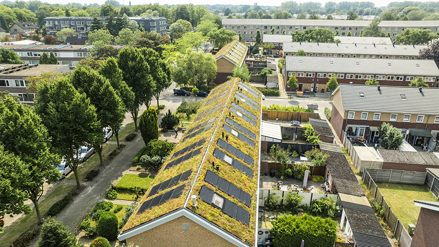
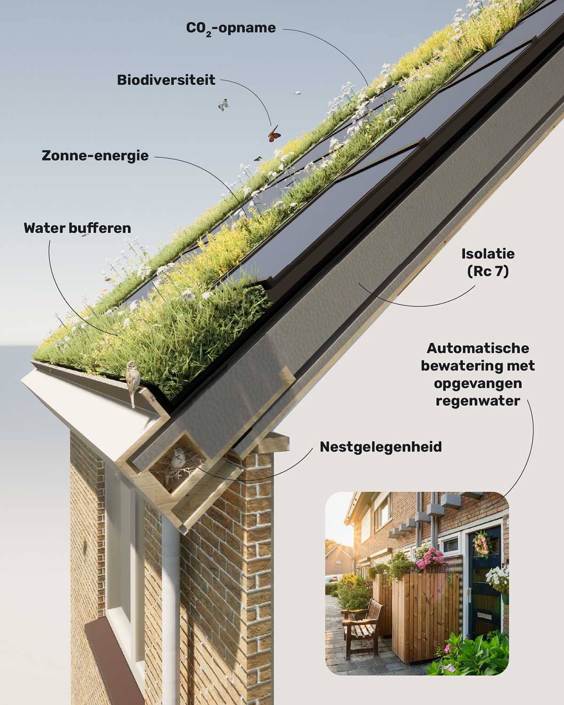
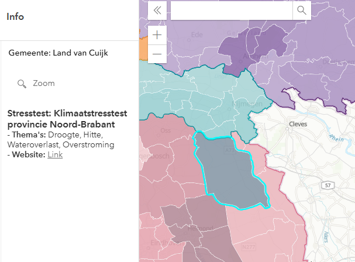
Waterpanel Noord Klimaatatlas 2.0
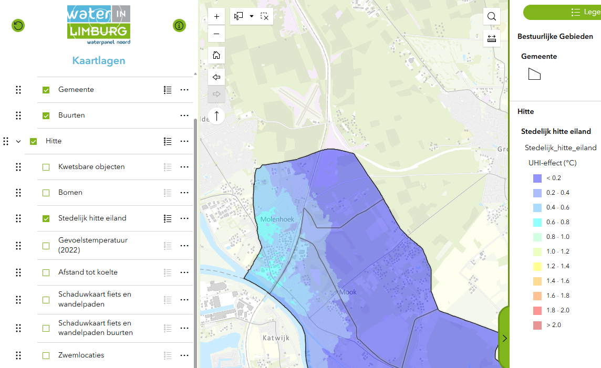
Xhttps://mijnspijkerkwartier.nl/pagina/spijkerenergie/menu/klimaatplan-arnhem
Spijker
WKR (Wetenschappelijke klimaatraad) https://www.wkr.nl/adviezen/klimaatbeleid/klimaatadaptatie
TNO: https://www.tno.nl/nl/newsroom/insights/2025/06/leefstijlverandering-klimaattransitie/
https://klimaatadaptatienederland.nl/hulpmiddelen/overzicht/maatlat-groene-klimaatadaptieve-gebouwde-omgeving/
webinar: https://klimaatadaptatienederland.nl/actueel/actueel/nieuws/2023/webinar-landelijke-maatlat-gemist/
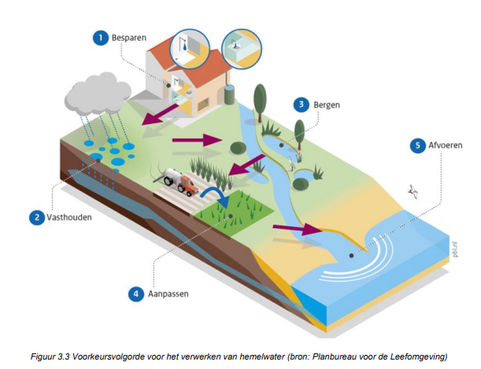
https://www.rvo.nl/onderwerpen/klimaatadaptatie-gebouwde-omgeving/maatregelen/kosteneffectiviteit
https://www.rvo.nl/onderwerpen/klimaatadaptatie-gebouwde-omgeving/maatregelen/bouwen-renoveren
https://www.dgbc.nl/publicaties/framework-climate-adaptive-buildings/
https://www.dgbc.nl/publicaties/framework-climate-adaptive-buildings/#download-form
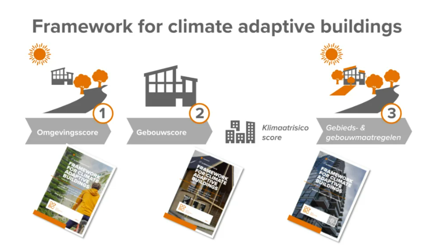
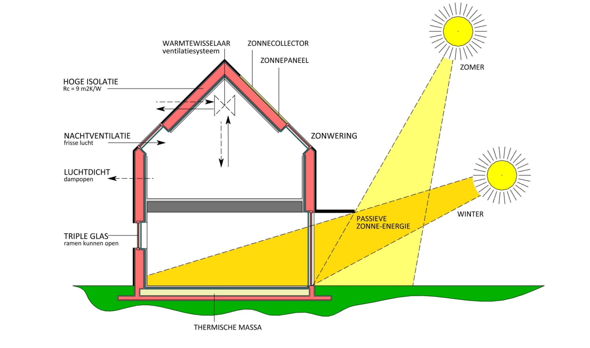
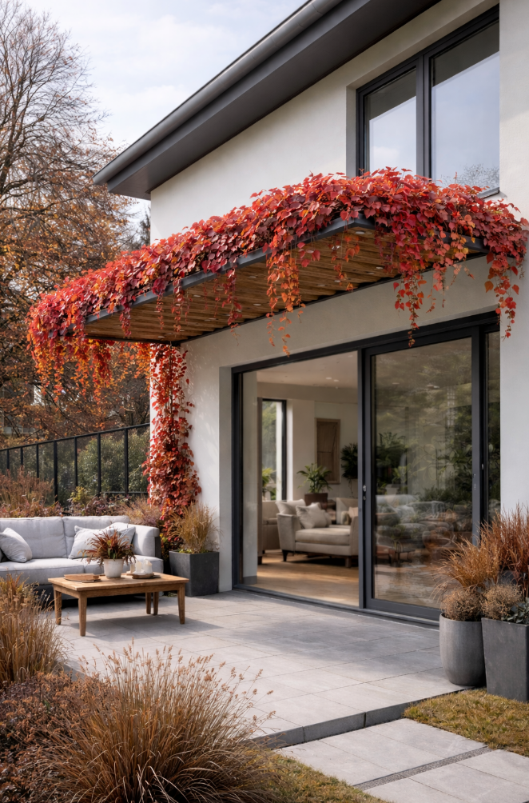
https://sunproof.be/gevel-lamellen
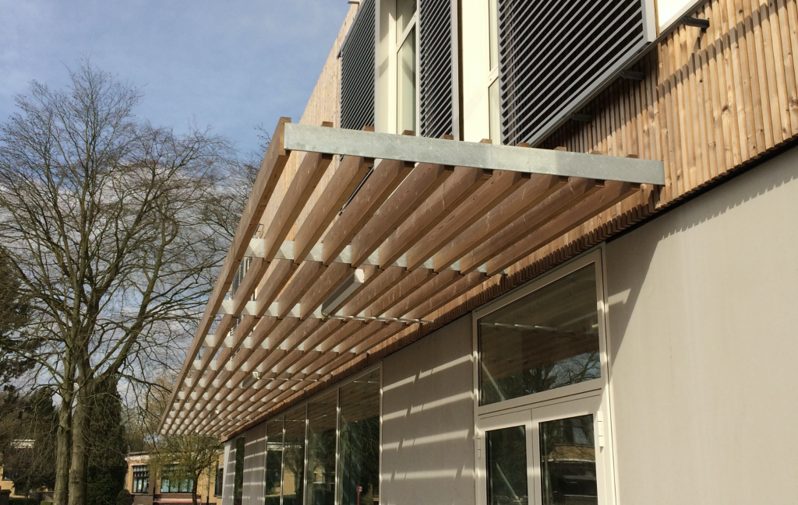
https://www.joostdevree.nl/o/overstek
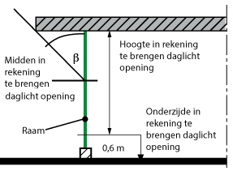
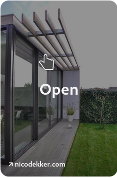
interessante site: https://www.handelbouwadvies.nl/voorkom-oververhitting-passieve-koeling/
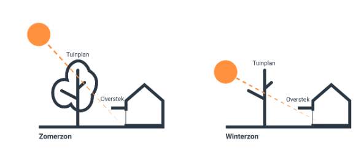
https://www.rvo.nl/onderwerpen/klimaatadaptatie-gebouwde-omgeving/financiering/slim-combineren
Met de TEEB Stadtool krijg je een beter inzicht in de waarde van groen en blauw.
https://www.atlasnatuurlijkkapitaal.nl/teebstadtool
file:///C:/Users/StefJ/Downloads/flyer_meekoppelen_klimaatadaptatie_en_mitigatie_1.pdf
Voorbeelden: https://klimaatadaptatienederland.nl/voorbeelden/
https://www.werklandschappen.nl/innovatiedatabase/multifunctionele-daktuin/?utm_source=klimaatadaptatienederland&utm_medium=klimaatadaptatiekaart#gallery-1
youtube: https://www.youtube.com/watch?v=4XLoCFrfwj0
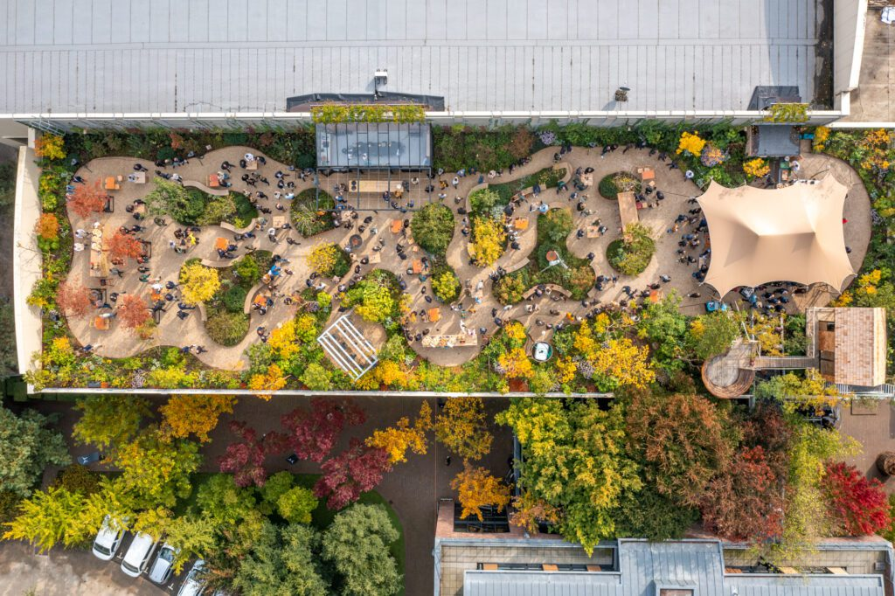
https://www.rvo.nl/onderwerpen/klimaatadaptatie-gebouwde-omgeving/hitte/menukaart-hitte
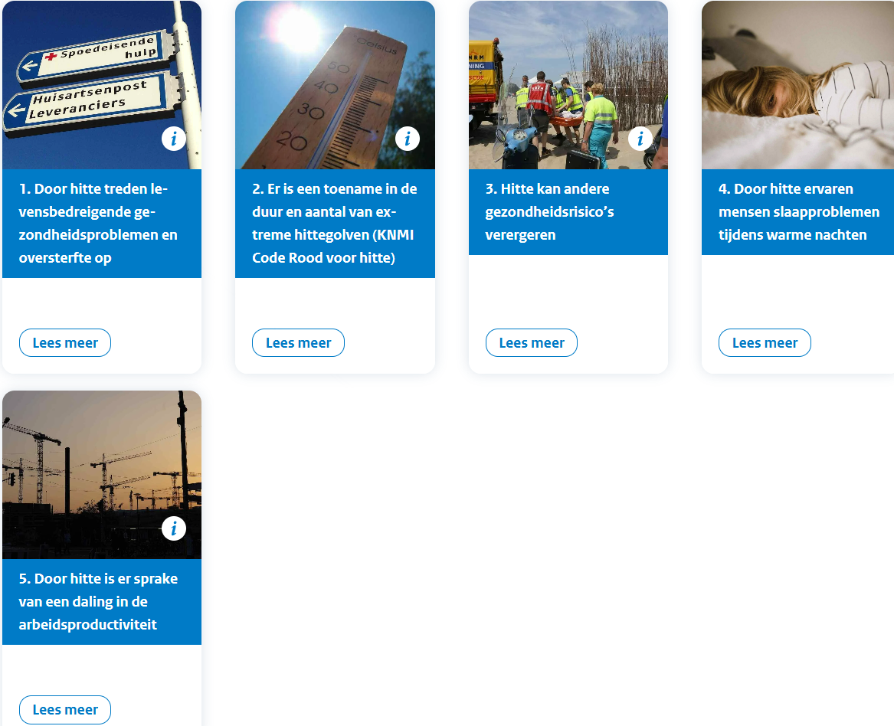
https://www.rvo.nl/onderwerpen/klimaatadaptatie-gebouwde-omgeving/financiering/kosten-baten
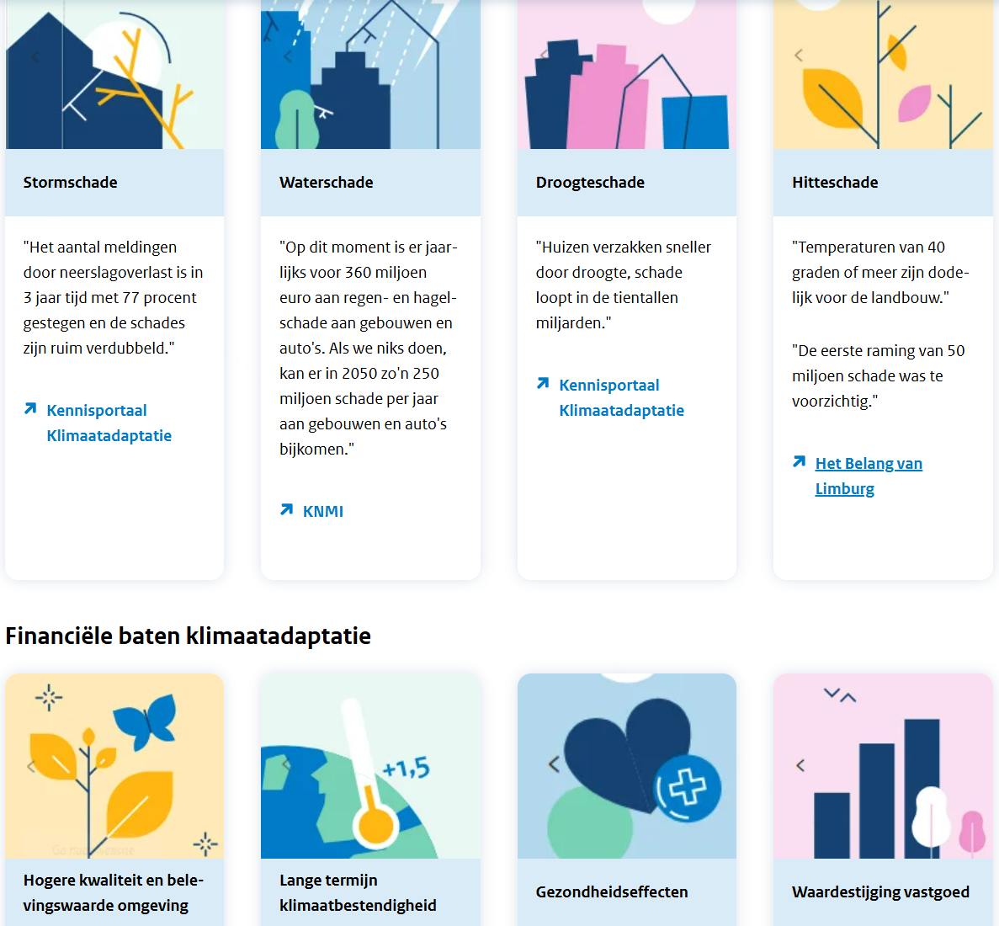
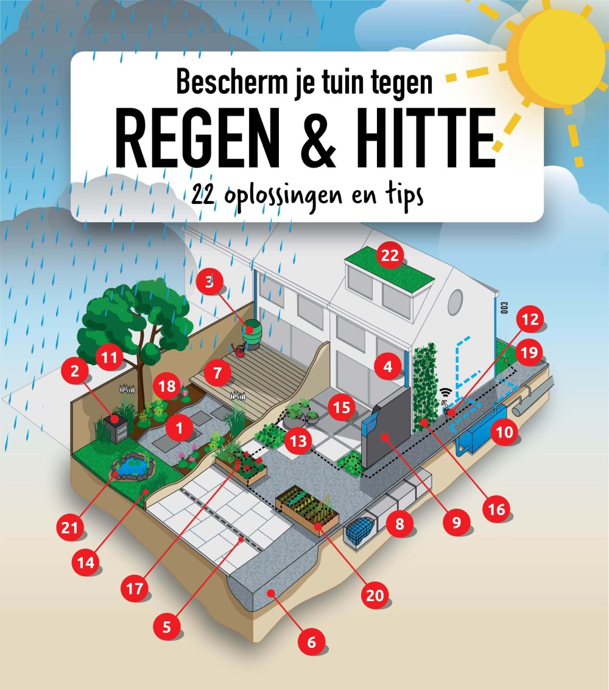